Dev Sanskriti Vishwavidyalaya
A premier university in Haridwar, Uttarakhand, India dedicated to the integration of scientific education with cultural and spiritual values. UGC recognized and NAAC accredited.
Explore CoursesOur Academic Programs
Explore our wide range of undergraduate, postgraduate, diploma and doctoral programs
Academics
Blending ancient Indian wisdom, Vedic philosophy, and modern scientific disciplines
Dev Sanskriti Vishwavidyalaya (DSVV) structures its academics around a unique blend of ancient Indian wisdom, Vedic philosophy, and modern scientific disciplines. The university emphasizes value-based learning, practical skills, and character building alongside conventional degrees.
Key Academic Faculties & Disciplines
The academic structure is divided into six specialized faculties offering a wide range of undergraduate, postgraduate, diploma, and doctoral programs:
- Yogic Science & Human Consciousness: Programs include B.Sc, M.Sc, MA, PG Diploma, and Ph.D. in Yogic Science, Yoga Therapy, and Human Consciousness. Focus: Hatha Yoga, therapeutic applications, pranayama, meditation techniques, and scientific research into consciousness.
- Technology & Computer Applications: Programs include B.Tech, BCA, B.Sc (Information Technology/Data Science), M.Tech, and MCA. Focus: Software engineering, AI/Data Science fundamentals, network architecture, and applied computational methods.
- Management & Tourism Studies: Programs include BBA, MBA (Tourism & Travel Management, Finance, Marketing, HR), and Rural Management. Focus: Sustainable enterprise, eco-tourism, cultural heritage tourism, and ethical leadership.
- Humanities, Social Sciences & Psychology: Programs include BA & MA in Clinical Psychology, Sanskrit, Philosophy, Indian History & Culture, English, and Hindi. Focus: Indian indigenous psychology, counseling, cultural restoration, and philological studies.
- Media, Arts & Vocational Studies: Programs include BA/MA in Journalism & Mass Communication, B.Voc in 3D Animation & VFX, and Indian Classical Music (Vocal/Instrumental). Focus: Digital storytelling, creative production, and preservation of performing arts.
- Education & Library Science: Programs include B.Ed., B.Lib.I.Sc, and M.Lib.I.Sc. Focus: Value-oriented pedagogy, modern teaching methodologies, and digital library management.
Core Academic Pillars
The university integrates values and experiential learning into the core academic journey through four main pillars:
| Feature | Description |
|---|---|
| Life Management | Compulsory modules on emotional resilience, stress management, and ethical living integrated into all degrees. |
| Research & Innovation | Dedicated centers for Scientific Spirituality, Yagya Therapy, and Alternative Medicine. |
| Experiential Learning | Mandatory internships, field immersions, community outreach, and rural development internships. |
| Holistic Lifestyle | Daily routine involving physical fitness, yoga, and meditation alongside academic coursework. |
Campus Distinctions
DSVV operates with distinct focuses across its campus settings:
- DSVV Haridwar (Uttarakhand): Established in 2002 under the aegis of Shantikunj; recognized for specialized research in Vedic sciences, Yoga, Psychology, and Alternative Medicine.
- DSVV Chhattisgarh (Durg/Kumhari): Established under the Chhattisgarh Private Universities Act; offers broader vocational, engineering, management, and conventional degree streams alongside cultural education.
NAAC Approved
Official accreditation documentation and reports available for download

Dev Sanskriti Vishwavidyalaya is committed to maintaining the highest educational and accreditation standards. Below are the official documentation and reports approved by the National Assessment and Accreditation Council (NAAC).
NAAC Report 1
Accreditation Document 1NAAC Report 2
Accreditation Document 2NAAC Report 3
Accreditation Document 3NAAC Report 4
Accreditation Document 4NAAC Report 5
Accreditation Document 5NAAC Report 6
Accreditation Document 6NAAC Report 7
Accreditation Document 7NCTE Recognition
Official statutory recognition, approved programs, and quality standards compliance
NCTE Recognition & Key Details
- Statutory Approval: The college's teacher education department is recognized by the NCTE under the NCTE Act, 1993, which authorizes it to run professional teacher training degrees and diplomas.
- Approved Teacher Education Programs:
- B.Ed. (Bachelor of Education): Approved intake of 100 seats.
- D.El.Ed. (Diploma in Elementary Education): Approved intake of 100 seats.
- Admission Process & Compliance: Admissions adhere to the regulatory norms established by the NCTE and the State Government (via CG Pre-B.Ed / Pre-D.El.Ed entrance exams or state-mandated counseling). The curriculum, teacher-to-student ratio, and pedagogical training follow the standardized NCTE curriculum frameworks.
NCTE Quality & Standard Requirements Fulfilled
- Pedagogy & Practical Training: Includes mandatory simulated teaching, micro-teaching sessions, and school internships in local government and private schools as mandated by NCTE norms.
- Faculty Qualifications: Faculty members in the Education department fulfill NCTE eligibility criteria (M.Ed./Ph.D. with relevant academic and teaching experience).
- Infrastructure Standards: The campus provides designated education laboratories (Curriculum Lab, Psychology Lab, ICT Resource Center, and Art & Craft Resource Center) to meet NCTE infrastructural guidelines.
Official NCTE Documentation
Below are the official recognition documents approved by the National Council for Teacher Education (NCTE).
NCTE Recognition Document 1
Official Order - APP1685NCTE Recognition Document 2
Official Order - APP2253UGC Commission
Core legislative acts, statutory recognitions, and compliance regulations
1. Core UGC Act Provisions Governing DSVV
- Section 2(f) of the UGC Act, 1956: DSVV is recognized under Section 2(f), which officially classifies it as a university established under a State Act and empowers it to grant degrees recognized across India.
- Section 22 of the UGC Act, 1956: Confers the statutory authority to award undergraduate, postgraduate, and doctoral degrees specified by the UGC.
- UGC (Establishment of and Maintenance of Standards in Private Universities) Regulations, 2003: Mandates adherence to UGC guidelines regarding campus infrastructure, teacher-student ratios, faculty qualifications, examination systems, and no off-campus study centers without central approval.
2. State Legislative Acts of Establishment
Because education is on the Concurrent List, DSVV entities are established via legislative Acts of respective state assemblies:
| Institution | State Act | Statutory Details |
|---|---|---|
| Dev Sanskriti Vishwavidyalaya (Haridwar, Uttarakhand) | Dev Sanskriti Vishwavidyalaya Act, 2002 (Act No. 4 of 2002 / Amendment Act 2009) | Passed by the Uttarakhand Legislative Assembly; notified in the Official Gazette on 11 April 2002 (Notification No. 123/Vidhayi & Sansadiya Karya/2002). |
| Dev Sanskriti Vishwavidyalaya (Chhattisgarh) | Chhattisgarh Private Universities (Establishment and Operation) Act, 2005 (Act No. 13 of 2005 & Amendments) | Incorporated as a State Private University by the Government of Chhattisgarh under the overarching state regulatory framework. |
3. Additional Statutory Recognitions & Affiliations
- National Council for Teacher Education (NCTE): Approves education programs such as B.Ed. under the NCTE Act, 1993.
- National Assessment and Accreditation Council (NAAC): Duly accredited for institutional quality assurance and academic standard conformance.
- Association of Indian Universities (AIU): Member university, ensuring degree equivalence nationally and internationally.
NIRF Status & Participation
National Institutional Ranking Framework alignment, evaluation metrics, and disclosures
NIRF Status & Institutional Context
The status and involvement of Dev Sanskriti institutions regarding the National Institutional Ranking Framework (NIRF), Ministry of Education, Government of India, is outlined below:
- Dev Sanskriti College / Vishwavidyalaya (Chhattisgarh):
NIRF Status: It is not ranked in the top published national rank bands of NIRF.
Institutional Context: As a developing regional private university/college focusing primarily on teacher education (B.Ed., D.El.Ed.), vocational studies, and undergraduate programs, its statutory approvals are anchored with the UGC and NCTE rather than competitive national research/engineering ranking tables. - Dev Sanskriti Vishwavidyalaya (Haridwar Flagship Campus):
NIRF Participation: DSVV Haridwar regularly submits its data and institutional parameters to the NIRF ranking framework.
Ranking Band: While it actively participates and submits mandatory institutional disclosure data (faculty strength, student diversity, placements, and expenditure), it generally features in the participating / unranked applicant category or outside the top-100 overall university list rather than holding a featured top-tier national rank.
Primary Accreditations: The institution's primary external benchmarking is via NAAC (National Assessment and Accreditation Council) accreditation, UGC (University Grants Commission) recognition under Section 2(f), and ISO 9001:2015 certification for standard quality management systems.
NIRF Evaluation Parameters for DSVV
| NIRF Metric | How DSVV Aligns |
|---|---|
| Teaching, Learning & Resources (TLR) | Strong student-to-faculty ratios in traditional subjects, Yogic sciences, and humanities. |
| Research and Professional Practice (RPP) | Focuses primarily on niche research areas (Scientific Spirituality, Yagya Therapy, and indigenous psychology) rather than heavy STEM citation volumes. |
| Graduation Outcomes (GO) | Strong performance in teacher training (B.Ed.) pass rates and specialized placements in wellness/media/NGO sectors. |
| Outreach and Inclusivity (OI) | High scoring in value-based community engagement, rural outreach programs, and gender diversity. |
| Perception (PR) | Widely recognized in holistic and alternative health circles, though distinct from mainstream technical/research institutes. |
Official NIRF Documentation & Disclosures
Below are the official Institutional Parameter Disclosure reports submitted to the National Institutional Ranking Framework (NIRF).
NIRF Disclosure Document 1
Institutional Parameter Disclosure 1NIRF Disclosure Document 2
Institutional Parameter Disclosure 2AIU Membership
Association of Indian Universities membership, degree equivalence, and academic collaboration
Key Benefits of AIU Membership for DSVV
- National Degree Equivalence: Ensures that undergraduate, postgraduate, and doctoral degrees awarded by Dev Sanskriti are recognized on par with those issued by any central or state university across India. This enables graduates to apply seamlessly for government examinations (e.g., UPSC, State PSCs, SSC), national-level competitive tests (UGC NET, GATE), and higher education programs at other recognized institutions.
- International Recognition & Foreign Admissions: AIU acts as the designated agency in India for granting academic equivalence to foreign qualifications. DSVV utilizes AIU equivalence guidelines to evaluate credentials of international students seeking admission into its degree and Ph.D. programs. Additionally, DSVV degrees are reciprocally recognized by foreign universities and evaluation agencies (such as WES) for higher studies or employment abroad.
- Inter-University Sports & Youth Festivals: Grants DSVV students the eligibility to represent the university in official All India Inter-University Tournaments and national youth cultural festivals organized by the AIU.
- Academic Exchange & Policy Participation: Enables institutional leadership and faculty to participate in national Vice-Chancellors’ conferences, joint research colloquia, and policy-formulation committees organized under the AIU umbrella.
Institutional Context
- DSVV (Haridwar Campus): Long-standing member of the AIU; frequently collaborates on national research initiatives and international cultural exchange programs (such as its Baltic Studies center).
- Dev Sanskriti (Chhattisgarh Institutions): College-level programs operate under the academic affiliation and degree-granting umbrella of the recognized parent university, ensuring all enrolled students receive AIU-recognized qualifications upon graduation. You can verify recognized institutions on the official AIU State Private Universities Listing.
Student Life at DSVV
Glimpses of campus life, events, and activities at Dev Sanskriti Vishwavidyalaya
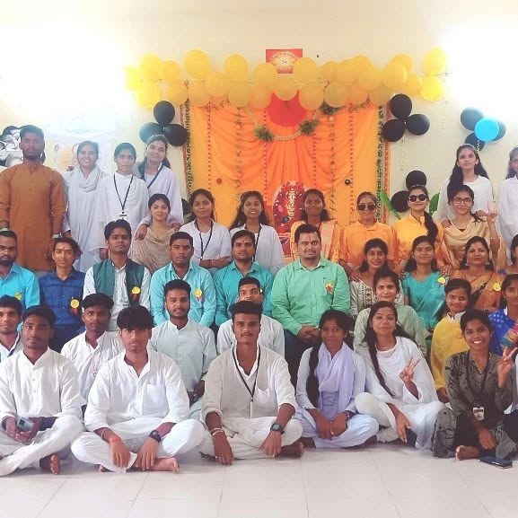
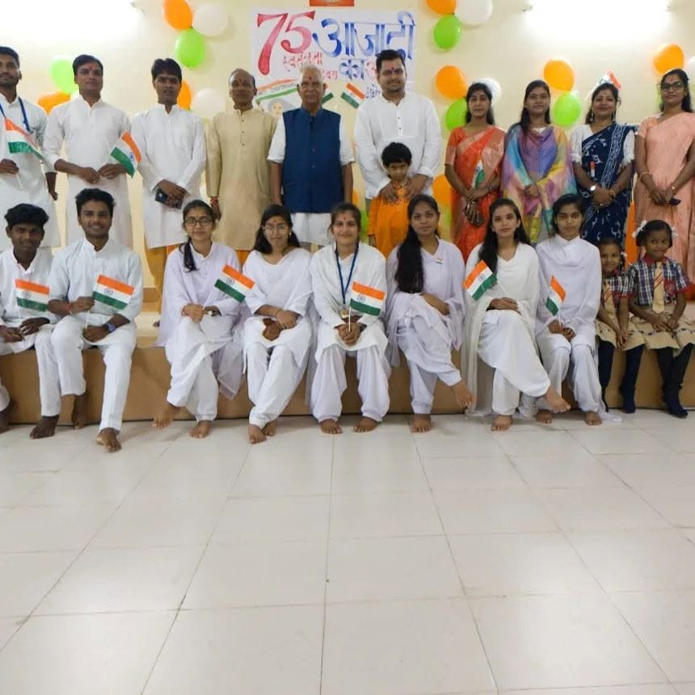
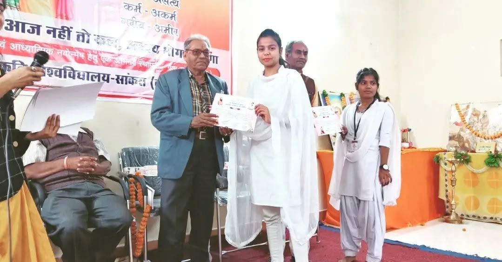
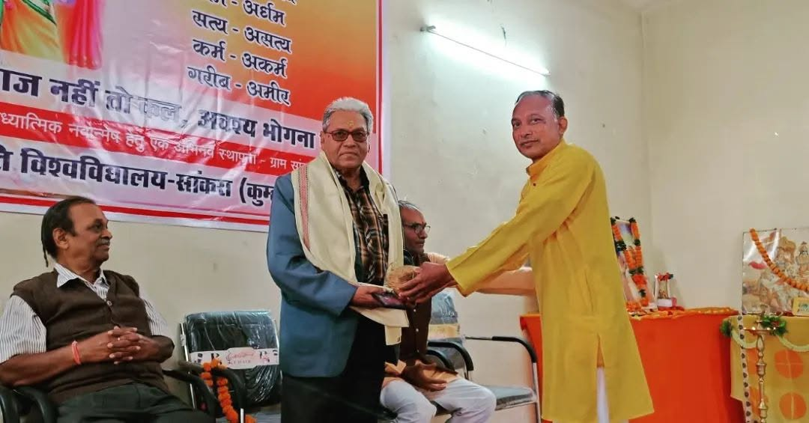
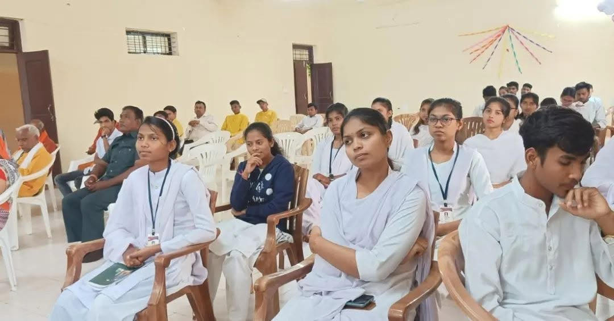
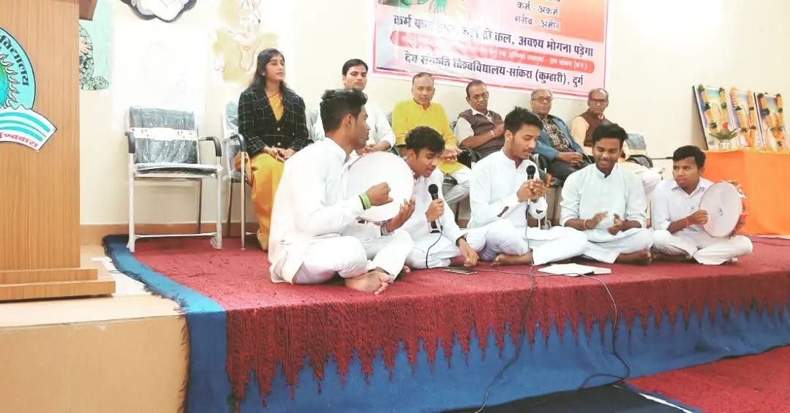
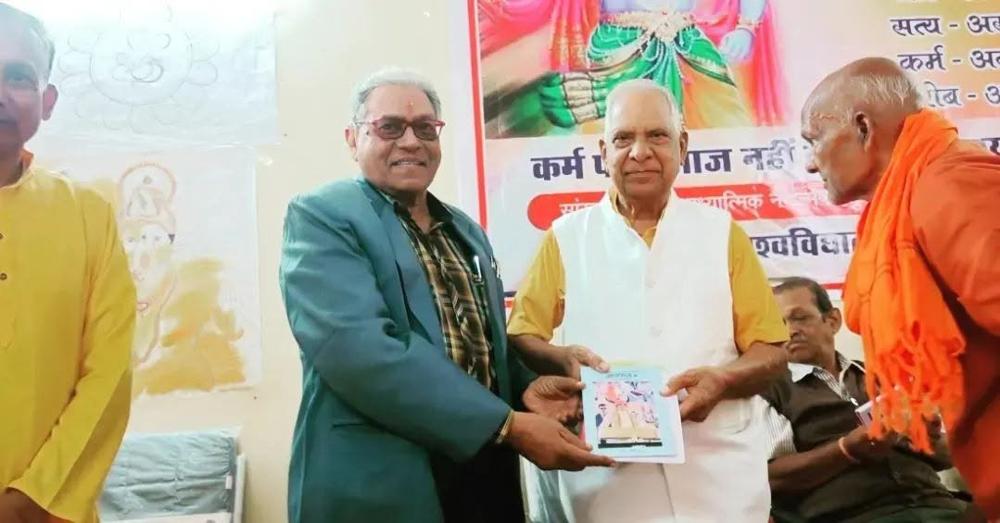
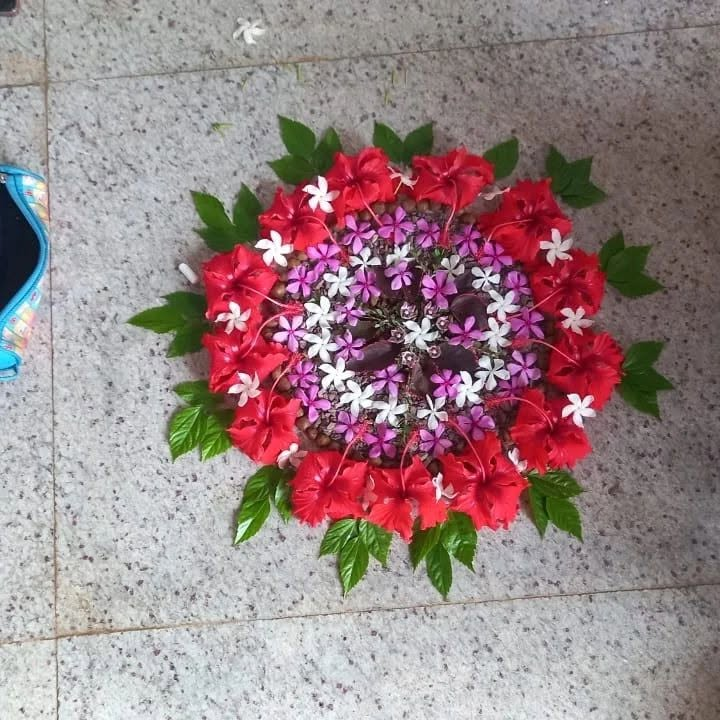
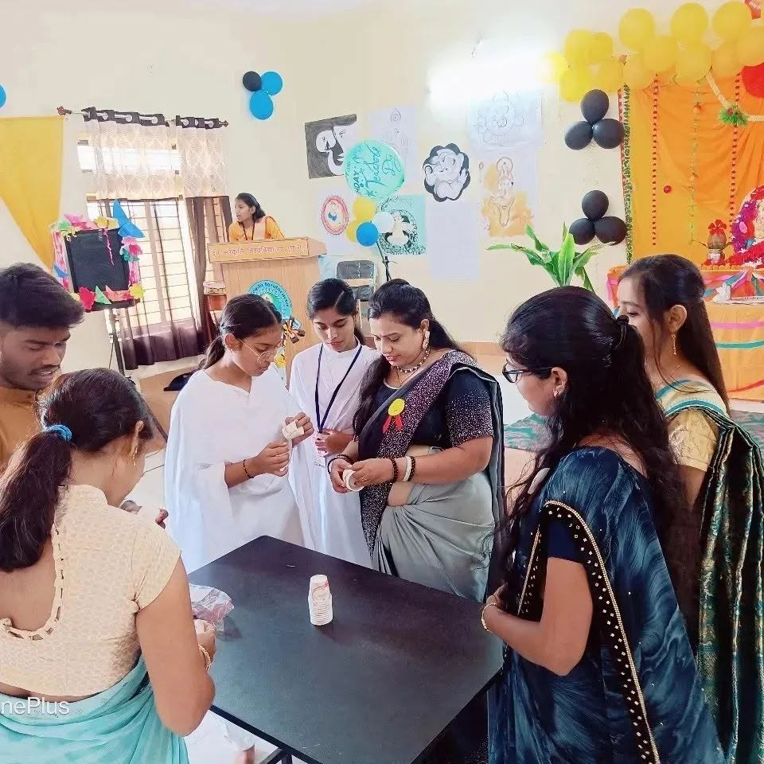
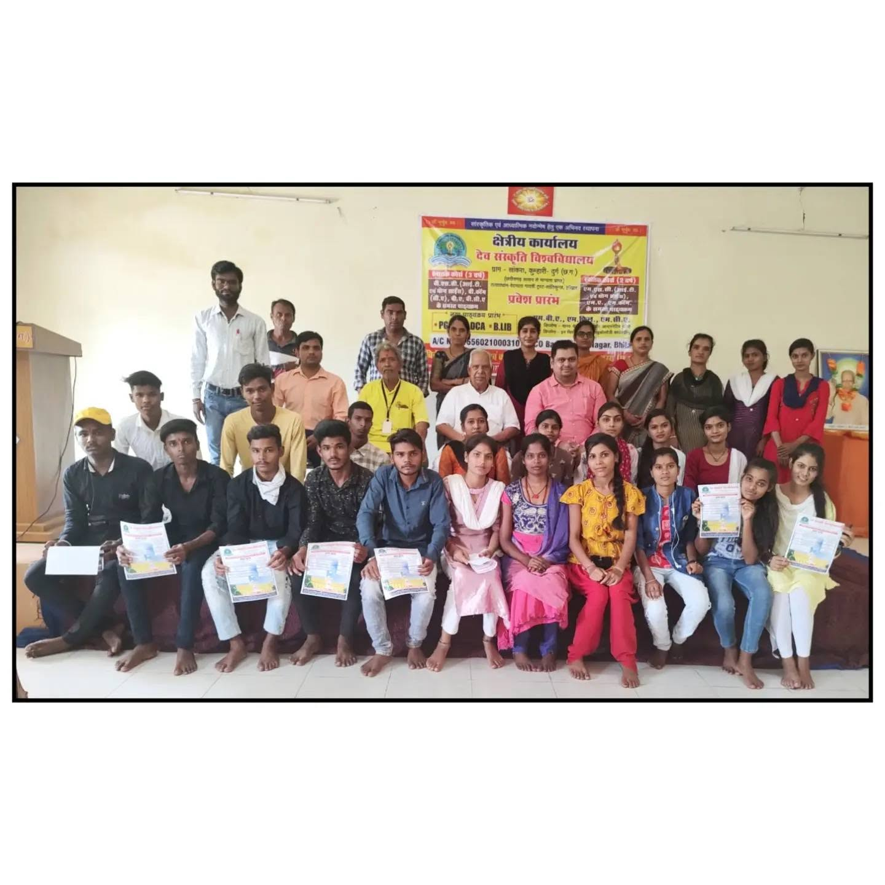
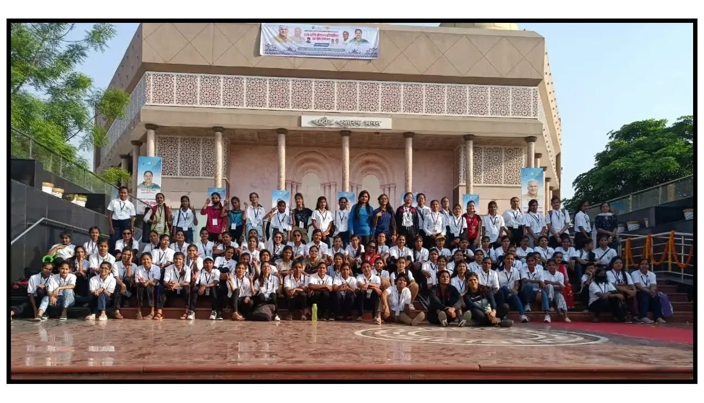
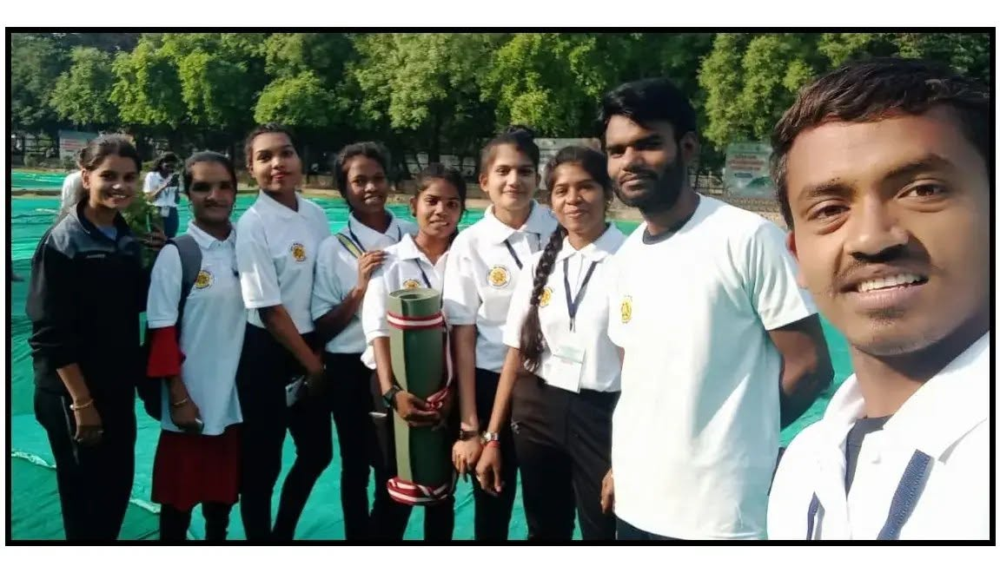
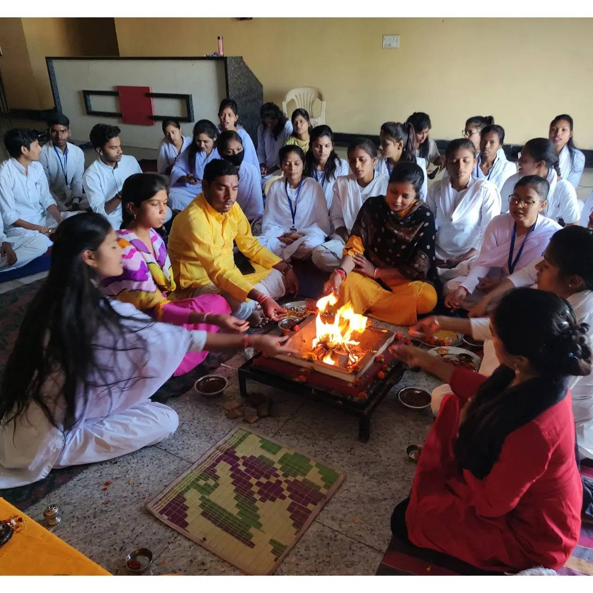
Why Choose DSVV?
Discover what makes Dev Sanskriti Vishwavidyalaya a unique choice for your academic journey
UGC Recognized & NAAC Accredited
DSVV is recognized by University Grants Commission (UGC) and accredited by National Assessment and Accreditation Council (NAAC) ensuring quality education standards.
100+ Academic Programs
Choose from over 100+ programs including B.Sc, M.Sc, B.A, M.A, B.Com, M.Com, B.Tech, MBA, MCA, Ph.D, diploma and certificate courses across various disciplines.
Holistic Education Approach
We integrate ancient Indian wisdom with modern scientific knowledge, nurturing intellectual growth alongside character development and spiritual values.
Spiritual Location - Haridwar
Located in the sacred city of Haridwar on the banks of River Ganges, our campus provides a serene and spiritually charged environment for learning.
Fully Residential Campus
Experience community living in our fully residential campus with modern amenities, fostering peer learning and holistic development.
Expert Faculty & Mentors
Learn from experienced educators, spiritual leaders, and industry experts who are dedicated to your academic and personal growth.
Research & Innovation
State-of-the-art research facilities including Brahmavarchas Shodh Sansthan for cutting-edge research in spirituality, yoga, and holistic sciences.
Global Recognition
DSVV attracts students from across the globe with international collaborations and recognition, preparing you for a global career.
About Dev Sanskriti Vishwavidyalaya
Dedicated to value-based, holistic education and academic excellence
“Tamaso Maa Jyotir Gamya”
"Lead us from darkness unto light"
Dev Sanskriti Vishwavidyalaya (DSVV), Chhattisgarh, is a state-private university established under the Chhattisgarh Private Universities Act and recognized by the University Grants Commission (UGC). The university is dedicated to value-based, holistic education that harmonizes modern academic rigor, technology, and professional skills with ethical, cultural, and spiritual development.
Overview & Genesis
The institution began its journey under the aegis of the Ved Mata Gayatri Shikshan Samiti (founded in 2007) as Dev Sanskriti Mahavidyalaya. It subsequently expanded as the Dev Sanskriti University of Education & Technology (2011–2012) and evolved into its current stature as Dev Sanskriti Vishwavidyalaya (DSVV), Chhattisgarh.
Location & Campus Setting
Located in the rural area of Khapri, Dhamdha Main Road, District Durg, Chhattisgarh (with administrative/campus links across the Sankra, Kumhari, and Raipur–Durg corridor). The campus is approximately 6 km from Durg Railway Station and 2 km from the permanent IIT Bhilai Campus (Kutela Bhanta).
The campus features a sprawling, eco-conscious, plastic-free and tobacco-free environment with landscaped gardens, open green spaces, dedicated vehicle sheds, and secure perimeters.
Campus Infrastructure & Facilities
Our campus provides modern classrooms, interactive smart rooms, and specialized computing and engineering laboratories. The central library is well-stocked with extensive print and digital resources. For physical and mental well-being, we offer dedicated yoga practice halls, meditation facilities, and sports grounds/courts for cricket, volleyball, and indoor games.
General amenities include a multi-purpose auditorium, student cafeteria, campus-wide Wi-Fi, RO water purifiers, and regular transport connectivity connecting Durg, Bhilai, and Raipur.
Academic Achievements & Faculty
We take pride in our experienced and research-oriented faculty body that undergoes regular Faculty Development Programs (FDPs) and research initiatives, with several members actively pursuing doctoral studies. Our structured Internal Quality Assurance Cell (IQAC) drives continuous curriculum modernization.
DSVV has achieved top university rank distinctions in the B.Ed. program across multiple academic sessions (2009–10, 2010–11, and 2017–18) and regularly hosts national workshops, webinars, guest lectures, and educational/spiritual exposure tours.
Skill Development & Community Outreach
We provide regular student enrichment modules covering spoken English, advanced computer skills, and yogic science. Through extension programs for rural development, we lead environmental initiatives such as vermicompost preparation and sustainable pesticide management workshops for government schools within a 10 km radius.
DSVV holds active academic partnerships and MoUs with regional colleges (including Bori Govt. College, Govt. College Dongargarh, Shri Shankaracharya/S. Swaroopanand institutions, and Sai College Bhilai) for academic exchange and collaboration.
Campus Culture & Student Welfare
We maintain a strict zero-tolerance policy against misconduct, maintaining an unblemished record with zero reported incidents of ragging or harassment. DSVV fosters a vibrant, culturally rich, and inclusive campus life that unites students across diverse backgrounds through regular cultural festivals, national celebrations, and community-driven events.